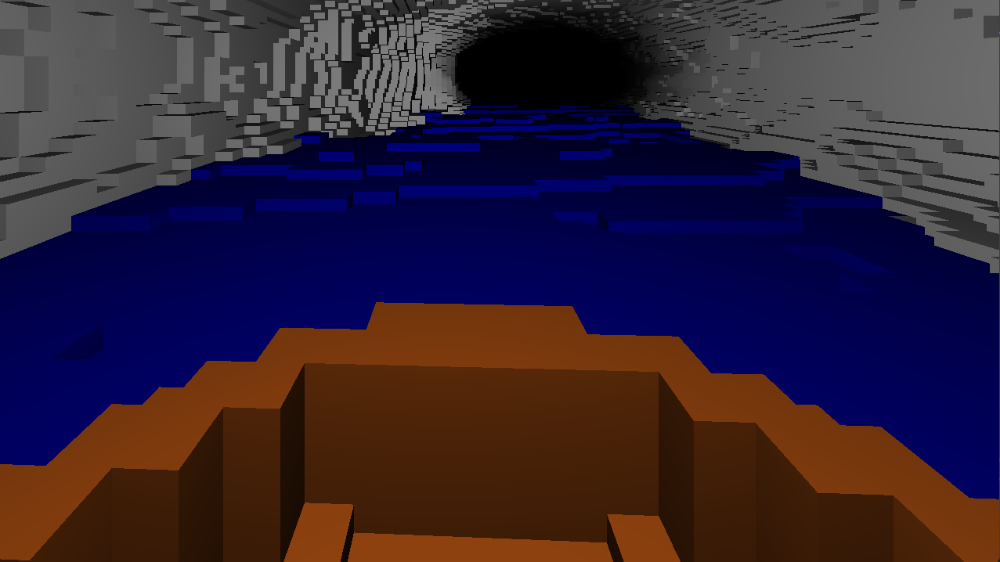

Tunnel Dokumentation
Das Prinzip dieses Projektes ist es zu experimentieren was alles mittels impliziter Grafik möglich ist und wo gegebenenfalls auch Schwierigkeiten im Vergleich zu expliziter Darstellung liegen.
Dazu hat jeweils jede Person einen Tunnel in einem Shader implizit definiert und darauf verschiedene Effekte, wie Pathtracing und Ambient Occlusion implementiert, welche dann hintereinander gerendert werden.
Die drei enstandenen Tunnel sind:
- Ein Voxel basierter Tunnel, um mit Voxel Umformungen zu experimentieren
- Ein Rohr um mit Echtzeiteffekten wie Ambient Occlusion und Shadow Mapping zu experimentieren
- Eine Höhle um mit Lichtinteraktionen durch Pathtracing zu experimentieren
Alle Tunnel wurden mittels Ray-Marching implementiert, wobei eine SDF definiert wird, welche zu eine Inputposition den Abstand zu der nächsten Position der Umgebung zurückgibt.
Damit werden dann Strahlen in die Szene geschossen, bei denen jeweils die Entfernung der SDF nach vorne geschritten wird, bis ein Threshold erreicht wird. Zurückgegeben wird dann die insgesamt zurückgelegte Entfernung.
Rendering
Jeder Tunnel befindet sich in einer eigenen Shader Datei, die getrennt voneinander mittels tunnel.cpp gerendert werden.
Um einen Tunnel auszuwählen wird die Environment Variabel "SHADER_OVERWRITE" genutzt. Die drei Tunnelnamen sind "tunnel_gem.frag", "tunnel_industrial.frag" und "voxel_trace.frag".
Der Voxel Tunnel wird also mit "SHADER_OVERWRITE=voxel_trace.frag ./tunnel" ausgeführt.
Um die gerenderten Frames auch abzuspeichern muss die Variabel "SCREEN_DUMP" gesetzt werden. Um den Voxel-Tunnel zu rendern ist also der Befehl "SCREEN_DUMP=TRUE SHADER_OVERWRITE=voxel_trace.frag ./tunnel" nötig.
Wichtig ist, dass bei dem Rendern von "tunnel_gem" intern noch die Sampleanzahl von 1 auf die gewünschte Samplemenge erhöht werden muss.
Voxel Tunnel
Was ist ein Voxel?
Ein Voxel kann man sich als 3D Äquivalent eines Pixels vorstellen. Dabei wird der Raum in ein Raster aufgeteilt wo jeder Punkt im Raum zu genau einer Zelle in dem Gitter zugeordnet ist. Beim rendern wird dies oft durch eine Blockwelt repräsentiert wie zu Beispiel bei Minecraft.
Voxel durch impliziertes Rendern darstellen.
Da wir in unserem Projekt das implizierte Rendern gewählt haben mussten wir eine Möglichkeit Voxel dort darzustellen.
1. Die Map Funktion
Unser erster Ansatz war die Voxel durch eine Map funktion zu repräsentieren. Dabei wird die Position auf das Raster übertragen. Falls dieser Voxel gefüllt ist wird ein Treffer registriert und eine negative Distanz innerhalb des Voxels zurückgegeben falls kein Treffer registiert wird muss die größte Distanz innerhalb des Voxels berechnet werden und dies ist dann die Distanz der sdf.
Vorteile
- Sehr einfach in bestehende Renderer einzubauen
- Kann leicht mit einer nicht Voxel welt verbunden werden
Nachteile
- Distanzen zu berechnen ist anstrengend da auch die Diagonalen Nachbarn betrachtet werden müssten
2. Die Trace Funktion
Hierbei bewegen wir uns mit der Trace Funktion selber nur in größe der Voxel durch den Raum und nutzt eine jegliche Standart Map Funktion.
Vorteile
- Kann in Verbindung mit jeglicher Map Funktion benutzt werden, es muss keine Welt in Voxel erzeugt werden
Nachteile
- Der Renderer selber muss verändert werden
Unser Ansatz:
Wir haben Angefangen mit dem ersten Ansatz die Versuche sind leider erfolglos geblieben die nachfolgenden Bilder sind beispiele.
Danach haben wir den Ansatz 2 gewählt da dieser die Möglichkeit für standart Map funktion liefert und leichter umzusetzten ist.
Ein Vorteil an diesem Ansatz ist ebenfalls das Voxelgrößen sehr einfach anpassbar sind da der Tracer sehr einfach die Schrittgröße anpassen kann und somit sich auf die Voxelgröße verändert.
Wasser
Die erste Idee des Wassers waren kleine teiche am boden des Tunnels
Jedoch wirkte Wasserbewegung dabei unrealistisch statisch Wasser wäre jedoch sehr langweilig gewesen, daher sind wir darauf gekommen das Wasser in einen Fluss zu verwandeln.
Das Boot
Die erste Idee war hier das Boot als einfache Geometrie in die Szene miteinzufügen das hat jedoch zu Problemen geführt. Das Boot ist hierbei eine hohle Halbkugel.

Das Erste Problem das auffällt ist Tatsache das das Boot unter Wasser ist, dieses Problem ließe sich leicht beheben jedoch gab es ein größeres Problem.
Das Boot bewegt sich sehr rucklig durch den Raum. Dies ist auch keine Überraschung da das Boot eine Mathematisch beschriebene Halbkugel ist und sobald sich diese durch den diskreten Raum bewegt sie automatisch anfängt sich blockig zu bewegen.
Den Ansatz den wir also stattdessen gewählt haben ist sehr ähnlich auch in vielen Spielen aus der first-person perspektive zu finden. Dabei werden die Hände oft seperat gerendert und dann über alles andere drüber gelegt damit die Hände nicht in naher Geometrie verschwinden. Hier wird das Boot durch einen weiteren Aufruf der Map Funktion gerendert, falls also bei diesem Aufruf das Boot getroffen wird nehmen wir das Boot als Farbe und ansonsten nutzen wir die normale Szene.
Jetzt stellt sich natürlich noch die Frage wie sich das Schwanken des Boots umsetzten lässt. Das rotieren der Halbkugel verändert nichts, da diese exakt die selbe Halbkugel rundherum ist habenn wir den Ansatz gewählt den Strahl den wir auf das Boot schießen zu rotieren.
Für das auf und abschwanken haben wir die blickrichtung der generellen Szene verändert da so das gesamte Blickfeld sich auf und ab bewegt.
Rohr
Modellierung
Das Ziel dieser Szene war es ein möglichst realistisches Rohr zu modellieren.
Das Modell ist dabei an ein mögliches Fertigungsverfahren angelehnt:
Zuerst werden drei Rohrbögen, welche jeweils ein Drittel eines Kreises abdecken verschweißt und bilden somit einzelne Rohrstücke.
Diese Rohrstücke werden dann wiederrum mittels Bolzen untereinander befestigt. Um die Stabilität des Tunnels
zu verbessern werden weiterhin die Rohrstücke um ein Sechstel versetzt aneinander gereiht.
Technische Umsetzung des Modells
Um nun diese wiederkehrenden Merkmale auf dem Kreis in der x-y-Ebene zu konstruieren, wird zuerst berechnet in welchem Kreisstück sich der Ausgangspunkt befindet.
Danach werden die x- und y-Koordinaten des Ausgangspunktes um den Winkel des davor bestimmten Kreisbogens rotiert. Für ein dreigeteilten Kreis bleibt somit ein Punkt welcher einen Winkel 0 hatte bestehen und
die Punkte mit dem Winkel 120° und 240° werden so rotiert, dass der neue Winkel 0 ist. Diese rotierte Punkte bieten jetzt die Möglichkeit mit einfachen bekannten SDFs (bspw. Quader, Würfel, usw.)
kreisförmig wiederholende Merkmale zu modellieren.
Exemplarische Darstellung der Rotation für Bogenstücke der Größe 120° (Drittelstücke)
Auch die Versetzung je Rohrstück lässt sich mit dieser Methode leicht modellieren, so wird der Winkel, um den zuvor rotiert wurde, abhängig von der z-Koordinate wiederkehrend erhöht bzw. verringert. Damit sind die Punkte welche einen Winkel 0 auf dem Kreis haben nun um einen weiteren Winkel verschoben (hier 60° oder 1/6 Kreis) verschoben.
Zusätzliche Effekte & Verfahren
Tunnel Pfad
Damit das Rohr nicht endlos in z-Richtung wächst wird sowohl der Beobachter als auch die Szene mittels einer Pfadfunktion verschoben. Diese ist der Einfachheit halber eine von der z-Koordinate abhängig sin und cos Translation der x und y Koordinate. Bei einer höheren Geschwindigkeit ist somit auch eine Periode erkennbar, für kürzere Rendering des Tunnels ist das allerdings nicht störend
Soft-shadows & Ambient Occlusion
Für die Szene wurden weiterhin Soft Shadows und Ambient Occlusion benutzt. Die Implementierung dieser, falls die Szene in SDFs vorliegt ist erstaunlich unkompliziert.
Für Ambient Occlusion wird ausgehenden von dem zu rendernden Punktes in Normalen-Richtung wenige Punkte mit geringem Abstand abgegangen und je Punkt wird der Abstand zu Szene bestimmt.
Je höher die Differenz des gegangenen Weges und der Abstand zu Szene ist, desto mehr sollte der zu rendernde Punkt verdeckt werden.
Auch Soft-Shadows lassen sich erstaunlich leicht rendern:
Hierfür wird ausgehend des zu rendernden Punktes zur Lichtquelle gemarched. Dabei wird das Minimum eines berechneten Schattens gesammelt (skaliert mit dem bereits gegangen Weges)
und als Faktor auf die zu rendernde Farbe aufmultipliziert.
Materialien
Um der Szene noch ein wenig Abwechslung zu verpassen existieren nun zwei Materialien. Ein rotes (rostiges) Metall des Rohres und ein wenig silbernes Metall für die Bolzen.
Bump Mapping
Die beiden Materialien haben nun zwar interessantere Farben doch ist beides für Metall recht glatt. Abhilfe dafür sollte das Normal Bump Mapping schaffen. Dabei wird die Normale in diesem Fall abhängig von der Position pseudo zufällig verändert. Dafür wurde eine Funktion definiert, welche die Bump Map repräsentiert. Für diese Funktion wird der Gradient numerisch bestimmt. Danach wird die Normale mit dem Skalarprodukt zwischen Normale und Gradient skaliert. Außerdem ist auf die anschließende Normalisierung der Normale zu achten.
Texturen und textur basiertes Bump Mapping
Um der Szene einen abschließenden Schliff zu verpassen sollte weiterhin die beiden Materialien eine Textur bekommen. Mittels dieser Textur wird daraufhin ein weiteres Bump Mapping berechnet. Dieses unterscheidet sich im Prinzip nicht von dem davor genannten Bump Mapping. Die Besonderheit hierbei ist es jedoch ein rgb-Bild als Bump Map zu verwenden. Dafür wird der gegebene Texturwert in Grayscale umgerechnet und danach als Bump Map Funktion benutzt.

Höhle
Vorab Bekannte Schwierigkeiten
Ziel war es einen Pathtracer zu implementieren, durch den verschieden-farbige Lampen an den Wänden Licht an alle Stellen der Höhle strahlen können.
Bevor überhaupt begonnen wurde war bereits klar, dass es unmöglich sein wird dies in Echtzeit umzusetzen, geschweige denn in kurzer Zeit zu rendern.
Im Laufe der Arbeitszeit war die Überlegung das Pathtracing-System auch auf die anderen beiden Tunnel anzuwenden, was, aber den zeitlichen Rahmen für das Rendern sprengen würde.
Dadurch ist das nun implementierte System aber sehr abgeschlossen und kann ohne viel Arbeit in ein weiteren Shader mit Ray-Marching übernommen werden.
Dabei war ebenfalls klar, dass man sich in einem Tunnel befindet und somit kein Sonnenlicht existiert. Dies hat zur Folge, dass ein Großteil der Strahlen bei simplem Pathtracing ins leere schießen und somit nicht zum Licht beitragen.
Umgebungsdefinition
Begonnen wurde erstmal damit simple Formen und Operationen, wie Würfel und Rotationen zu definieren.
Besonders bei der Rotation entstanden bereits einige komische Fehler, wie dass das rotierte Objekt abgeschnitten wird.
Sobald alle Grundoperationen korrekt implementiert wurden war es relativ simpel den Rest der Grundszene zu bauen.
An dieser Stelle wird auf die SDF einfach eine Noise-Textur addiert, wodurch die rauhe Darstellung entsteht. Dies lädt aber auch diverses Experimentieren mit anderen Funktionen ein, wie modulierten sinus-Kurven.
Bei den stärkeren Noise-Operationen wird aber auch bereits eine schwäche von Ray-Marching offengelegt. Eine Addition auf Distantfunktionen resultiert nämlich nicht in einer weiteren korrekten Distanzfunktion, weswegen sich in diesem Fall die schwarzen Stellen entwickeln.
An diesen Stellen springt der Strahl wegen den falschen Distanzfunktionen zu weit und trifft das korrekte Ziel somit nicht.
Es existiert aber auch eine Lösung zu diesem Problem, welche aber um einiges mehr Rechenzeit benötigt. Dabei werden iterativ immer kleiner werdende Objekte an der Wand platziert und mit dieser verbunden. Dadurch entsteht eine rauhe Darstellung, ohne, dass die SDF falsch wird.
Der nächste Schritt ist es eine Möglichkeit zu haben um aus der Distanzfunktion auch Materialinformationen zu erhalten. Um dies zu erreichen wird aus jeder SDF nun anstelle einer Distanz, ein "Object" zurückgegeben, welches die Distanzinformationen, sowie Materialinfos beinhält.
Diese können dann bei dem Rendering genutzt werden.
Der letzte Schritt ist es nun die Lampenpositionen zu definieren. Anfänglich waren diese statisch auch in dem Shader definiert, aber dies ist sehr unhandlich, da wegen dem Fehlen eines Sonnenlichtes sehr viele Lampen nötig sind.
Deswegen wurden diese außerhalb in c++ generiert und dann mit Uniforms in den Shader eingebunden. Die SDF für die Lampen iteriert über alle Lampen und gibt die mit der kleinsten Entfernung am Ende aus.
Rendering
Anfänglich wurden zum Testen von der Umgebung die Schatten direkt basierend auf Punktlichtquellen implementiert, was aber schnell auch mit dem neuen Pathtracer ersetzt wurde.
Dabei entstanden aber auch bereits Probleme mit falschen SDF-Werten, wodurch Schatten falsche berechnet wurden.
Der Pathtracer ist ein simpler cosine-weighted Pathtracer, da es zeitlich leider nicht möglich war, weitere schnellere Gewichtungen erfolgreich zu implementieren.
Die größte Schwierigkeit dabei war es den Code korrekt zu implementieren, sodass der PC bei dem Ausführen nicht wegen der großen Last im Shader abstürzt und den folgenden Output generiert.
Dies wurde gelöst, indem pro Shader-Durchlauf nur ein einziger Sample berechnet wird und diese Outputs dann mithilfe des Alpha-Kanals in OpenGL addiert werden, bis das vollständige Bild gerendert wurde.
Bei dem setzen des Alpha-Wertes wird noch die Stärke der Farben insgesamt erhöht, indem Alpha nicht auf 1/samples gesetzt wird, sondern nur auf 1/5, da ein großteil der Samples schwarz sind. Dadurch wird zwar teilweise Realismus verloren, aber die Konvergenz wird erhöht.